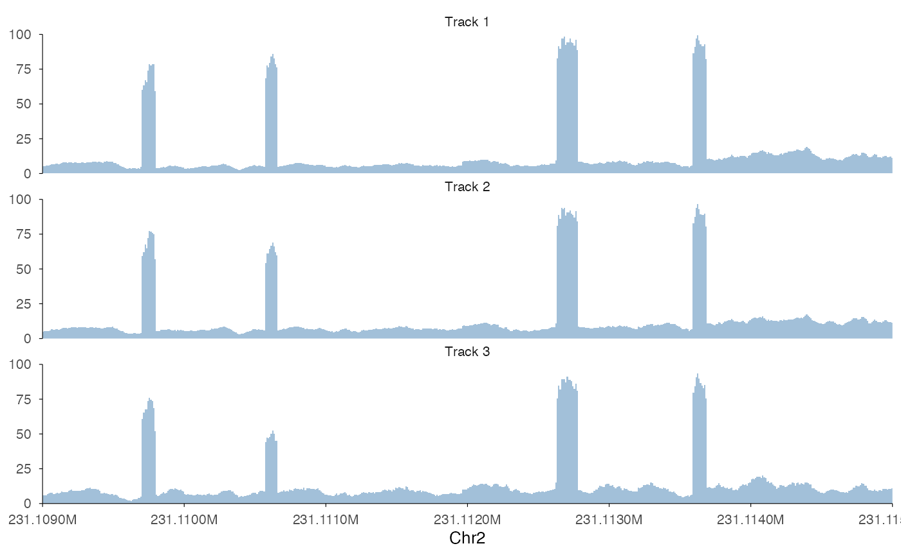
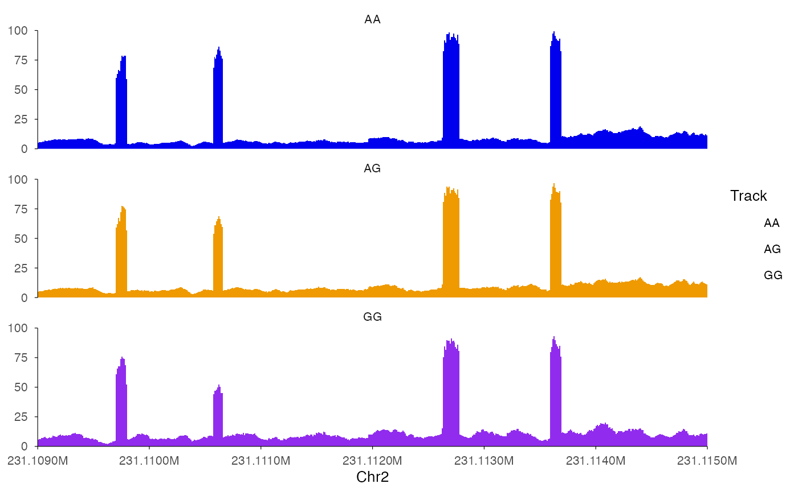
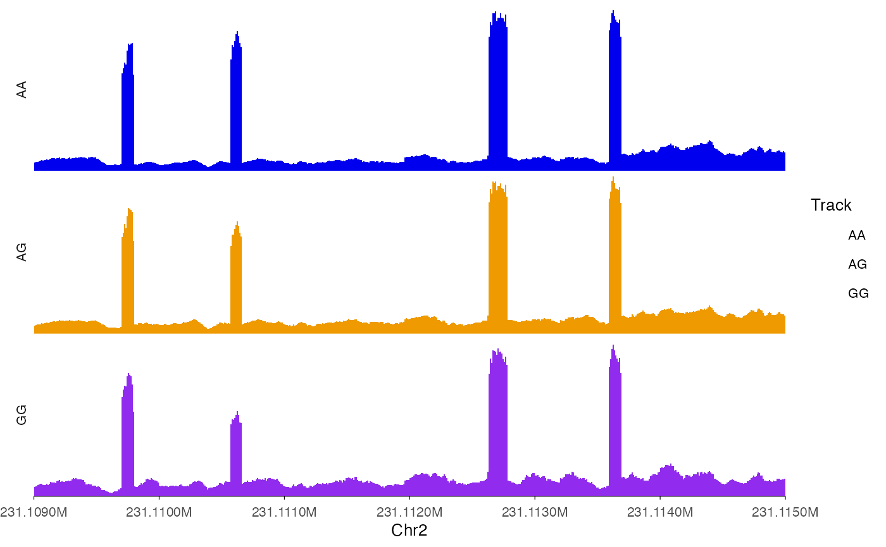
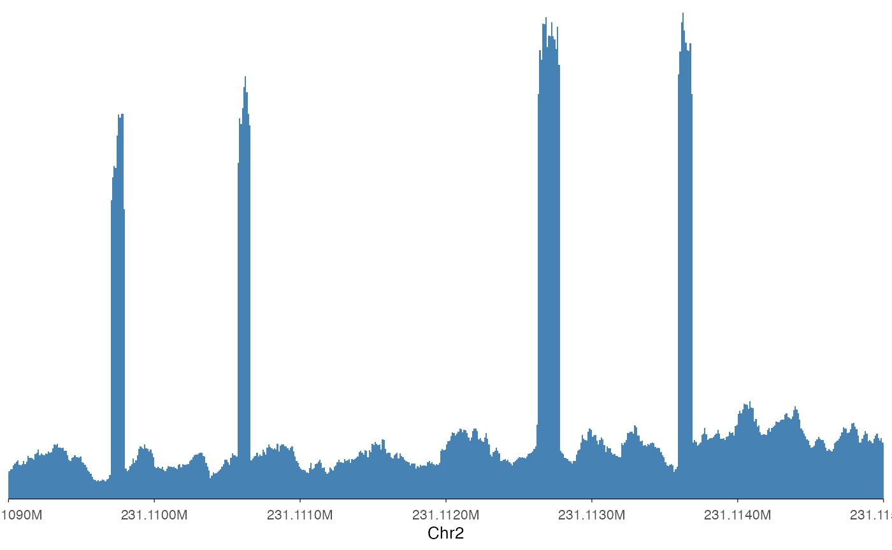
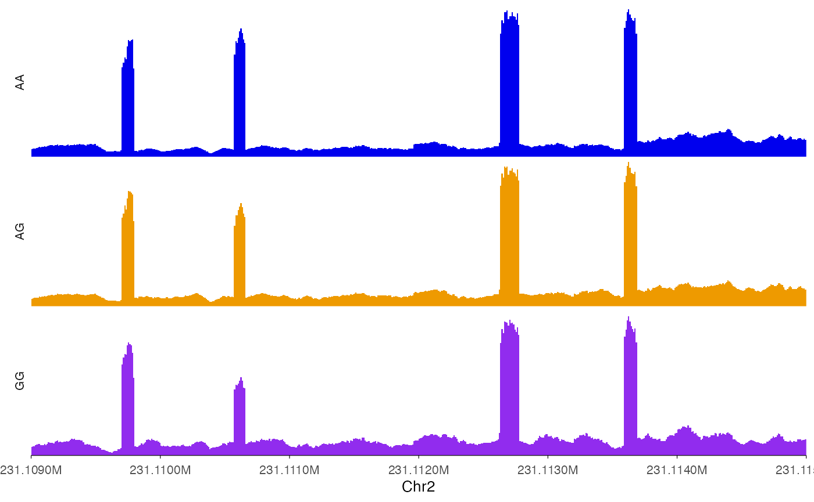
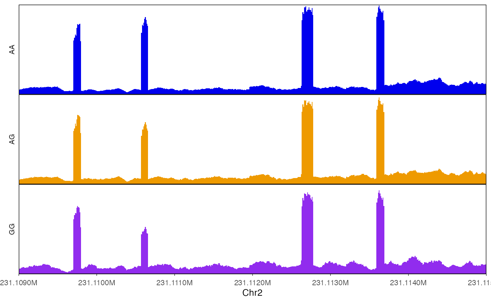
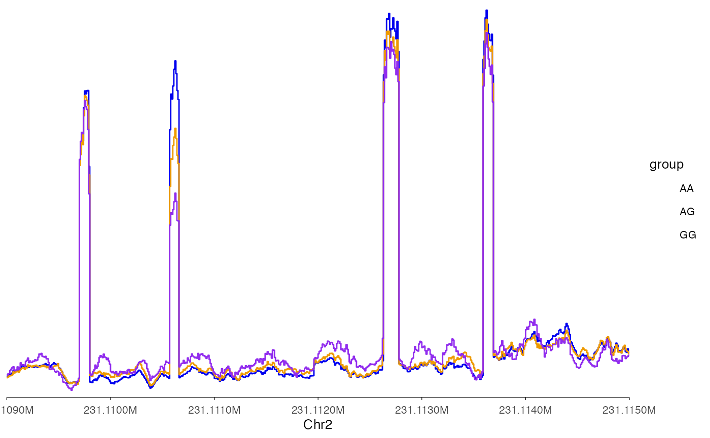
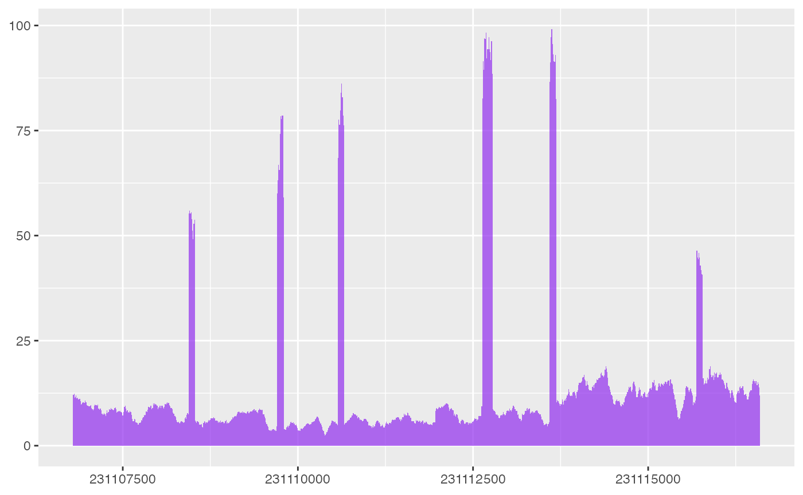

library(ezGenomeTracks)
#> ezGenomeTracks v0.0.1
#> Easy and flexible genomic track visualization
#> Use citation('ezGenomeTracks') to see how to cite this package
#> For documentation and examples, visit: https://github.com/zmu/ezGenomeTracks
library(ggplot2)The most common use of genome browser tracks is to plot coverage of
sequencing data. In most cases, we have a bigwig file and a
particular region that we want to plot. This is also one of the most
basic situation for using ezGenomeTracks.
Load example data
bw0 <- system.file(
"extdata",
"avg_chr2-231091223_231109786_231113600_0.bw",
package = "ezGenomeTracks"
)
bw1 <- system.file(
"extdata",
"avg_chr2-231091223_231109786_231113600_1.bw",
package = "ezGenomeTracks"
)
bw2 <- system.file(
"extdata",
"avg_chr2-231091223_231109786_231113600_2.bw",
package = "ezGenomeTracks"
)Use ez_coverage function
Plot a single coverage track
ez_coverage(
input = bw0,
region = "chr2:231109000-231115000"
)
Note that ez_coverage, like all other ez_*
wrappers, automatically convert the x-axis to readable scales.
Plot stacked coverage tracks
To plot stacked tracks, use a list() for
input to ez_coverage.
ez_coverage(
input = list(bw0, bw1, bw2),
region = "chr2:231109000-231115000",
y_axis_style = "full",
y_range = c(0, 100)
)
ez_coverage(
input = list(bw0, bw1, bw2),
region = "chr2:231109000-231115000",
y_axis_style = "full",
y_range = c(0, 100),
colors = c("blue2", "orange2", "purple2"),
alpha = 1,
track_labels = c("AA", "AG", "GG")
)
ez_coverage(
input = list(bw0, bw1, bw2),
region = "chr2:231109000-231115000",
y_axis_style = "none",
y_range = c(0, 100),
colors = c("blue2", "orange2", "purple2"),
alpha = 1,
track_labels = c("AA", "AG", "GG"),
facet_label_position = "left",
show_legend = T
)
#> Warning in geom_coverage(type = type, alpha = alpha, ...): Ignoring
#> unknown parameters: `show_legend`
There are two notable things in the above examples. First, we can use
show_legend = T add legends back. Second, the stacked
tracks are implemented as facets in ggplot2, we can use
facet_label_position = "left" to put it on the left of the
tracks.
Plot overlapping coverage tracks
In some cases, we want to plot overlapping tracks to compare coverage
heights. To do so, use a vector for input
to ez_coverage.
ez_coverage(
input = c(bw0, bw1, bw2),
region = "chr2:231109000-231115000",
type = "area",
y_axis_style = "none",
y_range = c(0, 100),
colors = c("blue2", "orange2", "purple2"),
alpha = 1,
track_labels = c("AA", "AG", "GG"),
facet_label_position = "left",
show.legend = F
)
In this way, it is clear that the second exon in this plot showed differential usage across the three genotypes.
Changing the looks of coverage track
Set y-axis range to all tracks.
ez_coverage(
input = list(bw0, bw1, bw2),
region = "chr2:231109000-231115000",
y_axis_style = "none",
colors = c("blue2", "orange2", "purple2"),
alpha = 1,
track_labels = c("AA", "AG", "GG"),
facet_label_position = "left",
y_range = c(0, 100)
)
Add border around tracks.
ez_coverage(
input = list(bw0, bw1, bw2),
region = "chr2:231109000-231115000",
y_axis_style = "none",
y_range = c(0, 100),
colors = c("blue2", "orange2", "purple2"),
alpha = 1,
track_labels = c("AA", "AG", "GG"),
facet_label_position = "left",
border = T
)
#> Warning in geom_coverage(type = type, alpha = alpha, ...): Ignoring
#> unknown parameters: `border`
Draw lines for coverage.
ez_coverage(
input = c(bw0, bw1, bw2),
region = "chr2:231109000-231115000",
type = "line",
y_axis_style = "none",
y_range = c(0, 100),
colors = c("blue2", "orange2", "purple2"),
alpha = 1,
track_labels = c("AA", "AG", "GG"),
facet_label_position = "left",
show_legend = T
)
#> Warning in geom_coverage(type = type, fill = fill, alpha = alpha, ...):
#> Ignoring unknown parameters: `show_legend`
Use geom_coverage function
For advanced users that hope to do more customization with the plots,
geom_coverage can be directly used with ggplot
calls.
bw0_cov <- rtracklayer::import(bw0) |>
granges_to_df()
head(bw0_cov)
#> seqnames start end width strand score
#> 1 chr2 231106786 231106787 1 * 11.65226
#> 2 chr2 231106787 231106788 1 * 11.65226
#> 3 chr2 231106788 231106789 1 * 11.65226
#> 4 chr2 231106789 231106790 1 * 11.65226
#> 5 chr2 231106790 231106791 1 * 12.09351
#> 6 chr2 231106791 231106792 1 * 12.09351
ggplot(bw0_cov) +
geom_coverage()
As you can see, geom_coverage automatically looks for
default columns need to plot coverage data, but more code are needed to
make the plot look like what ez_coverage outputs.